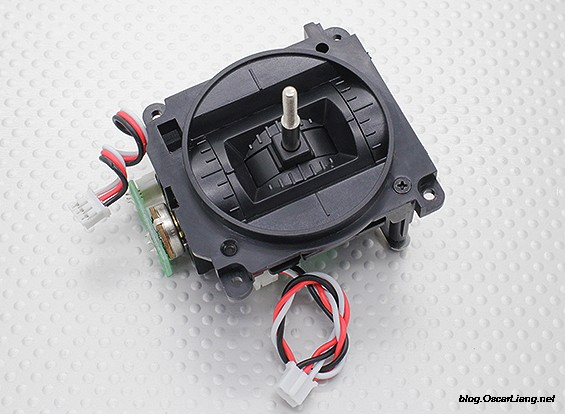
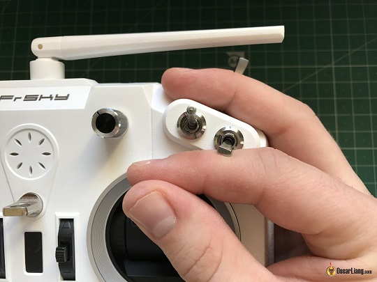
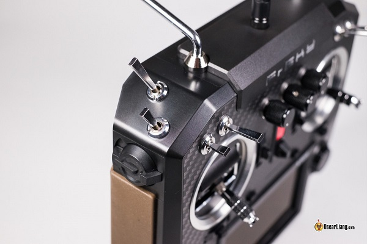
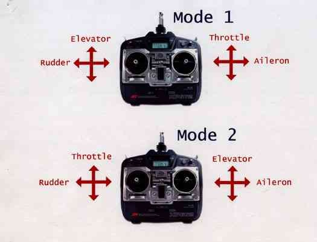
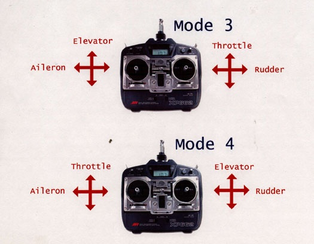
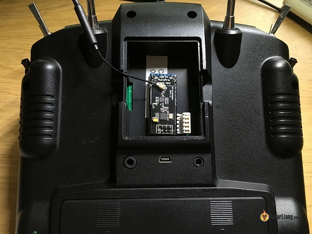

选个好控能伴随你好多年。
为什么先写选控呢？因为血淋淋的教训啊！ - 你有过飞机飞着飞着飞丢了的经验吗？ - 你有过好好的遥控这突然之间不受控制了的经验吗？ - 你有过买了一个入门控然后玩几下突然发现不够了用了然后的升级的经验吗？ 各种血的教训告诉我们，控最好一步到位，除非你只是想尝试一下无人机，然后就把它丢一边了。
如果大家对无人机遥控器还不是很了解，请点击传送门
下面将分别通过几个部分来讲讲选控的注意点吧：
摇杆

摇杆的性能是评价一个遥控好坏的重要指标，它的平滑度和手感对飞机的控制影响非常大。当你还是一个新手的时候可能感觉不明显，但是当你成为一个老鸟的时候，它可能成为你控制飞机的瓶颈。
一种流行的技术叫霍尔传感器万向节，它使用磁铁而不是传统的电位计来检测棒的位置。因此，它更耐磨，更精确。PS: 没搞懂霍尔为什么会更精确一点，反正大家说牛逼那就牛逼了吧。
握摇杆的方式也需要特别的留意下。如果是用单拇指下压的方式来调节摇杆，那就需要一根短一点，接触面积大点的摇杆。而如果用拇指和食指夹着的方式来握摇杆的话，那就需要一根长一点的摇杆，可能还需要一跟带子挂头顶，这种方式比较容易碰到旁边的拨码开关，需要特别留意。

另外摇杆的回弹力都是可以调节的，这个将在以后写文章说明。
开关
摇杆是遥控的基本配置，但是除了摇杆以外，遥控器上还会有一些开关，这些开关可以用来解锁、切换飞行模式等。

开关一般会有三种，带两个或者三个档位的拨码开关，带旋钮的旋转开关，以及带滑块的滑动开关。而一个开关一般对对应一个通道。然而，对于四轴来说，其实并不像固定翼一样需要很多通道，一个解锁，一个模式其实已经足够用了，当然开关多点也并没有什么坏处。
通道
中间的摇杆左右共需要四个通道，油门、偏航、俯仰、翻滚。每个开关也都需要一个通道，开关的通道一般被称之为附加通道。
飞穿越机的话一般推荐6到8个通道，这些额外的1到2个通道可以被用来解锁飞机，切换飞行模式等用途。不是说多了不好，而是通道越多，价格越贵。
实际可用的通道数量是由遥控发射端和接收端共同决定的，如果你有个9通的遥控器，配一个4通的接收机，那实际可用的通道也就只有4个。
模式
模式说白了就是油门、偏航、俯仰和翻滚四个功能在摇杆四个通道上的排列组合。由于油门和俯仰一般会设置成前后方向的摇杆，偏航和翻滚一般会设置左右方向的摇杆。所以最终组合出来的方式有如下四种。


模式2一般被称为美国手，模式1一般被称为日本手。没有哪个好，哪个坏，因个人习惯而异。个人单纯的不喜欢日本手这个名字，所以选了mode2的遥控器，其实美国手这个歌名字也不咋的，可是没有中国手这个名字啊。
接收机
接收机是装在飞机上与遥控器通信的模块，一般跟遥控器一起购买的，如果单独购买的话就要注意它的频段和协议是不是跟你已有的遥控能够匹配了。比如Frsky 的接收机是没法和Spektrum 的遥控对频的。
除此之外，还要注意接收机跟你的飞控能不能通过，它们支持的端口和协议是否一致，有PWM、PPM、sbus等。
如果上面两点都确认没问题的话，一般情况下两边都能正常对接了的。
实际应用的时候还要注意接收机的尺寸，迷你四轴的话最好选个尺寸小点的接收机。飞机上需要操作通道多的话也最好选个通道足够用的接收机。
遥控距离
影响遥控距离的因素很多。
-
视界内的直线距离传输效率最好，而接收器和发射器直接如果有障碍物的话就会衰减遥控距离。
-
发射器的功率也会影响到遥控距离，更高的功率意味着更长的传输距离。
- 接收机灵敏度越高，灵敏度越高，遥控效果越好。
- 接收天线冗余，两根天线做冗余对遥控效果的提升也有很大的影响。
- 天线的安装位置对传输距离也有很大的影响。
一般的，最好的2.4Ghz遥控器能提供300m多1.5km的遥控距离。如果需要更长的遥控距离，选用低频率的发射机会有很大的帮助。
扩展能力
遥控器一般都会内置一个射频发射模块用于跟接收机对接，但是这个射频模块所用的波段、频率、协议都是固定的。如果遥控器支持扩展功能的话，就可以安装其他外部的射频发射模块用于扩展其遥控能力。
比如有个多协议模块可以对接很多市面上的遥控飞机，而像TBS Crossfire和Frsky R9M等这些模块可以工作在900Mhz的频段下，适合长距离遥控。

操作系统
每个遥控器都有自己的操作系统，这是基本的人机交互接口。
很多厂商会有自己的操作系统，但是有一个开源的操作系统OpenTx相当值得推荐，OpenTx兼容市面上很多遥控器。一些流行的遥控可能出厂就自带OpenTx。用OpenTx的话，在一开始上手可能会比较费劲，但是它的功能和可配置性是市面上最强大的。
遥测
遥测是一个非常有用的功能，它能把飞机上的飞行数据回传回来告知飞手。比如电池电压、RSSI数据、电流曲线等。
如果是OpenTX操作系统的话，这些遥测数据还能在遥控屏幕上显示出来，当有预警的时候还能够发出语音警报。
Comments
There are no comments yet.